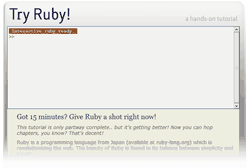

205,000 Lines of Ruby Code Donated in the Try Ruby Drive #
You hear that sound? That subtle squeak which instantly reminds one of distant ducks quacking great spools of wood grain? Yeah, that one. That’s what it sounds like when the world gets together to code.

Matz spilled the cat two days ago on his blog, as one of the many testers I employed to shake apart my new Try Ruby online tutorial. I ran this sucker by the #hoodwinkd crew, the project.ioni.sts and the #rubyist.org gang, Florian Gross, and even the illustrious Guy Decoux. A very capable lot, I thank them all.
So, 205,000 lines of Ruby code in two days. I’m watching all this code come in and finding myself very entertained. Here’s a few of my favorite moments:
>> gem install rails
Approximately five people attempted to require "rails" or even render_text "w00t". But running gem install is just pricelessly wrong.
I also really like require 'tk'. I mean you really want to unfold that tent right in the middle of this beautiful prompt I’ve given you?
>> system.out.println("hola")
Fifteen people like that. I am really tempted to spoof it. I can see these guys getting a happy teeth expression and going, “Wow, Ruby really is easy!”
>> Kernel.fork { "hello" }
Lots of people got fork and puts mixed up.
>> while true; puts 'Joe Junkpan' end
I love it. That’s going to hurt you a lot more than it hurts me. Don’t forget not to type Symbol.all_symbols.
>> format c: >> cd c:\ >> delete c:\
Oh no, my MP3s! My Usher collection! NO!
>> wtf? >> hello?
About sixty people welcomed themselves to the interpreter by typing wtf. I should make it an alias for help.
From today at 4:43 PM:
>> wtf >> wtf = wtf >> wtf==wtf >> wtf? >> time
court3nay
`rm -rf` didn’t work either :|
court3nay
not that it would work normally, but you get the general idea.
why
See, you should have tried `../../../../../../../../bin/rm -rf` like some of these other guys. It wouldn’t have worked either, but you never know when a parent directory is suddenly going to show a little leg.
drbombay
Alas, it doesn’t work in Safari. The period key doesn’t render, either the regular one of the one on the numeric keypad. And yes, those keys do work regularly.
This is for Safari 2.0.2. With Firefox/Mac it works just fine.
why
I could really use help with Safari. I’m stabbing in the dark on that one.
Brian
I have to admit I added to a few of those odd pokes like fork. Though, you seem to have changed a few things so now I have to do this to access Kernel:
The thing that got me to try it was the fact the method is still listed. I still need to try out
set_trace_functo see if I can catch a binding but well… the idea is out now. You probably have patched all of those already but I am willing to poke at this new wonder more if you like.Kevin Ballard
Hrm, I just tried executing a simple puts statement in Safari and it crashed my browser!
robert
Usher collection? Burst my bubble!
victor
I suspected you would be looking. That’s why I greeted you ;)
Bil
Why: you really do need a PowerBook in your life. We could make it happen, you know. Just give the nod…
Not?
Presumably the fault lies in the onKeyDown method – are you sure these keyCodes are portable across browsers? Presumably the dot is being interpreted as a disallowed character (yes, this is not hard to work out : )
onKeyDown: function(e) { <br/> e = (e) ? e : ((event) ? event : null); <br/> if ( e && MouseApp.CodeKeys[e.keyCode] ) { <br/> if ( window.event && e.keyCode != 13 && e.keyCode != 8 ) { <br/> this.sendKeyPress(e); <br/> } this.blockEvent(e); <br/> return false; <br/> } <br/> return true; <br/> }, <br/> <br/> onKeyPress: function(e) { <br/> if ( window.event && e.keyCode != 13 && e.keyCode != 8 ) { <br/> e.charCode = e.keyCode; e.keyCode = null; <br/> } <br/> return this.sendKeyPress(e); <br/> }, <br/>The up arrow gives an extra character at the end of the last used statement, which also renders that feature inoperable. If the code was available for download we could give it a try for you.
Doesn’t work in Opera either I’m afraid.
pedro
oh my god this is GORGEOUS :~
why
Oh, fine fine. Now people are filing their bug reports through the prompt.
Fixed!
I really have no idea how to get Opera to cooperate. It’s shortcuts steal the show. Safari I’m sure is just a few subtle tweaks away.
Blaine
This does so much rock, however in Firefox / Windows, the divide example 40 / 4 shows ‘40 /? 4’, and doesn’t return the right answer. Also when I get to print poem, it doesn’t go on.
Maybe I timed out on that last problem.
Congrats.
Jordan
This is an incredible piece of work, I’ve got to hand it to you! I’ve only noticed one typo so far.
You stated the following in Summary #4:
When the actual bit oh code that was used was:
I’ll let you know if I find anything else!
Jordan.
wunkie
by golly, that thing is hard to bamboozle. Clever, you.
bp
When I try to run it locally I get all caps in Safari. But it looks like the problem could be with the keypress event. In Safari keyCode is different in onkeypress (46) and onkeydown (190). That seems weird to me, but I’m not very experienced with keyboard events in javascript.
jeem
So it was all an evil plot to let you make fun of my code? First Duke Cunnigham and now why. One by one, all my idols crumble.
why
Poor jeem, it’s just that you make me so happy. Sleep, my child, no more math homework tonight.
AdamSanderson
Briliant as ever ;)
...and sometimes more so!
digikata
how many of those lines involved the phrase “hello world”? (I personally know of a least one :)
Tesseract
How about a “bug” function? Then you wouldn’t have to read the logs to find out “hey mr lucky stiff the help ain’t working”...
MrCode
I played with this yesterday, but was a good boy and didn’t try anything evil. I did take a look at the source for the page to try and figure out some of the magic. But I didn’t delve deeply into the included .js files, because IANAJSH (I Am Not A JavaScript Hacker.)
But for fun:
Ken
This is extremely cool. Web-based irb for people with broken computers (“what?! no irb command?!”).
Have you considered making “ri” available from the tutorial prompt?
kode
I decided to spread the word further. hopefully the ruby communtiy will gain a healthy amount of swedes in the near future.
eTM
When I use my surname (jürgen) help 1 is not working. The character ü somehow prevents the tutorial to proceed to the next step. I have to rely on “Jimmy” instead.
eTM
Suggestion: an all UTF -8 version would be nice.
Danno
I think we’re now at a point in history where the actual user interfaces are going to look cooler than the ones in movies.
I’m tempted to make a Bling style for tryruby
why
Yes, Danno. I’ve also wondered what people could do with Greasemonkey/MouseHole in terms of saving scripts and sharing scripts and so on.
huh
On the 40.reverse page, “fourty” should be “forty”.
Merc
So Why, how did you manage to get scooped by O’Reilly and others in announcing this?
Gavin
Nice work as always Mr. Why. One typo: “(Also known as: an empty dictionary.” Missing close parenthesis. Everything after that sentence was parenthetical and I just couldn’t take it seriously.
Gavin
Also, I accidentally triggered a tutorial hop while mucking around. What about a “back” command to go back a page?
StrayNeuron
Great job, Why – I’ll nave all the Ruby n00bs at work hitting your site tomorrow morning
Oprat
I see, so us Opera lepers can just crawl back to our lo-tech hole and die, can we, while you all enjoy the benefits of Ruby on the intarweb?
In firefox, though: Why, it’s sublime :]
EdCrypt
The dead-keys in my keyboard ( like ~, `, ”, , ’, ^, the ones I heve to type space before because they are use to accentuate some letters in Portuguese) does’nt work in the shell. Just now that I was going to demonstrate some people how this Ruby language is cool, but wacky ...
DeanG
Great stuff. :D Is there a Ruby equivilent to python’s ‘import this’?
kode
DeanG: not knowing what import does in python, but “require”, I suppose.
Ganz
Damn. Wow. Amazing.
I have the following demands:
1) Release to the ruby world the magic behind this fantastic toy.
2) Prod people to make a new generation of programming tutorials (yay interaction!) for various ruby topics (regular expressions! crazy string manipulation!).
3) Doubly prod people to make interactive programming games with this. I certainly would love to make a few ruby games with this kind of distribution/interface mechanism.
nope
You might want to inform people using your service that you are recording everything they type. Are you recording IP addresses too?
Comments are closed for this entry.